<!DOCTYPE lake>
<h2 data-lake-id="HRuiZ" id="HRuiZ"><span data-lake-id="u8e00be05" id="u8e00be05">学习目标</span></h2><ul list="u86a03dfe"><li data-lake-id="ubb63037a" fid="u102c1a7b" id="ubb63037a"><span data-lake-id="u6a33bc99" id="u6a33bc99">了解SPI协议</span></li><li data-lake-id="u12adc01a" fid="u102c1a7b" id="u12adc01a"><span data-lake-id="u11eaafea" id="u11eaafea">熟悉SPI相关的名词</span></li><li data-lake-id="ue2b9e4fd" fid="u102c1a7b" id="ue2b9e4fd"><span data-lake-id="u133605f2" id="u133605f2">熟悉SPI通讯过程</span></li><li data-lake-id="u459f4c8e" fid="u102c1a7b" id="u459f4c8e"><span data-lake-id="ubc17ff40" id="ubc17ff40">熟悉SPI数据传输方式</span></li></ul><h2 data-lake-id="KXzYu" id="KXzYu"><span data-lake-id="u09746cf0" id="u09746cf0">学习内容</span></h2><h3 data-lake-id="Z9xBN" id="Z9xBN"><span data-lake-id="u46a39732" id="u46a39732">SPI概念</span></h3><p data-lake-id="ub1f6d1c2" id="ub1f6d1c2"><span data-lake-id="ub8ca8305" id="ub8ca8305">SPI（Serial Peripheral Interface）是一种串行外设接口协议，用于在微控制器（MCU）或微处理器之间进行通信。SPI协议通常用于连接主设备（通常是微控制器）与外部从设备（如传感器、存储器芯片、显示器等）之间，以传输数据和控制信息。SPI通信具有以下主要特点：</span></p><ul list="u4395d9fe"><li data-lake-id="u95f992b3" fid="u3ad3d318" id="u95f992b3"><strong><span data-lake-id="u72e6f5ba" id="u72e6f5ba">串行通信</span></strong><span data-lake-id="u586bd676" id="u586bd676">: SPI使用多个引脚进行通信，包括时钟线（SCLK）、主输出从输入线（MOSI）、主输入从输出线（MISO）和片选线（CS/SS）。通信是串行的，每个数据位都按位传输。</span></li><li data-lake-id="u9696dd24" fid="u3ad3d318" id="u9696dd24"><strong><span data-lake-id="u5ca3e04c" id="u5ca3e04c">全双工通信</span></strong><span data-lake-id="u4e5949a2" id="u4e5949a2">: SPI支持全双工通信，这意味着主设备可以同时发送数据到从设备并接收从设备返回的数据。这使得SPI非常适合需要高速双向通信的应用。</span></li><li data-lake-id="udd2cd493" fid="u3ad3d318" id="udd2cd493"><strong><span data-lake-id="uff8eb625" id="uff8eb625">主从架构</span></strong><span data-lake-id="uc32f83af" id="uc32f83af">: SPI通信通常涉及一个主设备和一个或多个从设备。主设备控制通信流程，选择要与之通信的从设备，然后发送和接收数据。从设备按照主设备的命令响应。</span></li><li data-lake-id="u09f0c426" fid="u3ad3d318" id="u09f0c426"><strong><span data-lake-id="udb615638" id="udb615638">时钟同步</span></strong><span data-lake-id="ub15466a3" id="ub15466a3">: SPI通信是时钟同步的，主设备生成时钟信号来同步数据的传输。时钟信号的极性（CPOL）和相位（CPHA）可以配置，以确定数据在时钟的上升沿或下降沿进行传输。</span></li><li data-lake-id="ue3287a9a" fid="u3ad3d318" id="ue3287a9a"><strong><span data-lake-id="u58c9ac62" id="u58c9ac62">多工作模式</span></strong><span data-lake-id="u3db7c363" id="u3db7c363">: SPI支持多种工作模式，通常有四种模式，根据CPOL和CPHA的不同组合而变化。这些模式允许SPI适应不同的硬件配置和通信需求。</span></li><li data-lake-id="u22715f4e" fid="u3ad3d318" id="u22715f4e"><strong><span data-lake-id="uac32537d" id="uac32537d">快速传输速度</span></strong><span data-lake-id="u2ff90646" id="u2ff90646">: SPI通信可以在高速应用中运行，具体速度取决于硬件和软件的支持，通常可以达到几兆赫兹或更高的速度。</span></li></ul><p data-lake-id="u76a8f16c" id="u76a8f16c"><span data-lake-id="u59c9346b" id="u59c9346b">SPI通信在嵌入式系统、传感器应用、存储器接口、显示屏控制和许多其他领域广泛使用。由于其高速、全双工和简单的硬件连接，SPI通信在许多嵌入式项目中都是一种常见的通信协议。不同的MCU和外部设备可能有不同的SPI实现细节，因此需要仔细查阅硬件文档以正确配置和使用SPI通信。</span></p><h3 data-lake-id="HtyBn" id="HtyBn"><span data-lake-id="u6dec3d3e" id="u6dec3d3e">通讯方式</span></h3><p data-lake-id="u0d3d6821" id="u0d3d6821">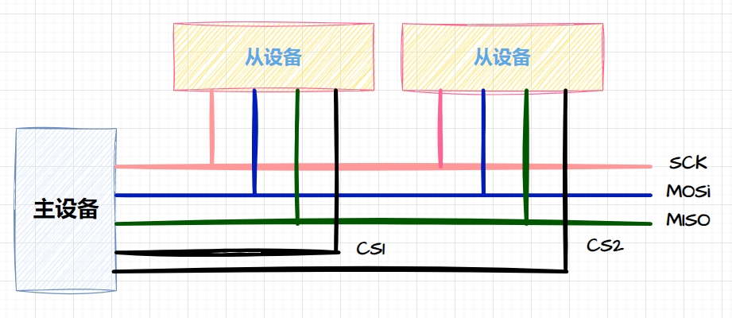</p><p data-lake-id="u1a965c47" id="u1a965c47"><span data-lake-id="ubbed5270" id="ubbed5270">SPI可以称之为总线。总线是主设备和从设备间进行通讯的。</span></p><p data-lake-id="u842b5b0b" id="u842b5b0b"><span data-lake-id="uebd88dc8" id="uebd88dc8">SPI通讯过程中包含了多条线：</span></p><ul list="u0e7fa293"><li data-lake-id="uca3909a3" fid="uac3cb1b4" id="uca3909a3"><strong><span data-lake-id="uce96e4ff" id="uce96e4ff">时钟线（SCLK - Serial Clock）</span></strong><span data-lake-id="u85ba72f0" id="u85ba72f0">：时钟线用于同步数据传输，它由主设备生成，控制数据的传输速率。所有SPI设备都共享同一个SCLK线。</span></li><li data-lake-id="u67b1eb65" fid="uac3cb1b4" id="u67b1eb65"><strong><span data-lake-id="u7835afd0" id="u7835afd0">主输出从输入线（MOSI - Master Out Slave In）</span></strong><span data-lake-id="u02657c06" id="u02657c06">：MOSI线用于从主设备向从设备传输数据。主设备将要发送的数据通过这条线发送给从设备。</span></li><li data-lake-id="ua08634de" fid="uac3cb1b4" id="ua08634de"><strong><span data-lake-id="u88cc9cf9" id="u88cc9cf9">主输入从输出线（MISO - Master In Slave Out）</span></strong><span data-lake-id="uedf2c2ec" id="uedf2c2ec">：MISO线用于从从设备向主设备传输数据。从设备将其响应的数据通过这条线发送给主设备。</span></li><li data-lake-id="ubc565c54" fid="uac3cb1b4" id="ubc565c54"><strong><span data-lake-id="ue0285399" id="ue0285399">片选线（CS/SS - Chip Select/Slave Select）</span></strong><span data-lake-id="u3b9459f9" id="u3b9459f9">：片选线用于选择与主设备通信的特定从设备。当主设备希望与某个从设备通信时，它会使该从设备的片选线为低电平，以指示通信目标。当片选线为高电平时，从设备处于非活动状态。</span></li></ul><p data-lake-id="u8712da1b" id="u8712da1b"><span data-lake-id="u4ab0f54c" id="u4ab0f54c">这四条线是SPI通信中的基本线路，它们允许主设备与一个或多个从设备之间进行全双工通信。根据具体的SPI配置和需求，有时还可以使用其他辅助线，如主设备的输出使能线或从设备的中断线，以实现更复杂的通信和控制功能。</span></p><p data-lake-id="ub8f7fdb0" id="ub8f7fdb0"><span data-lake-id="u55ba8255" id="u55ba8255">​</span><br/></p><p data-lake-id="u75a1d43b" id="u75a1d43b"><span data-lake-id="u2b1ea0e0" id="u2b1ea0e0">由于认知或者是其他原因，在业界，这四条线名字非常多，例如：</span></p><ul list="u9d1f04ce"><li data-lake-id="u5e1bac65" fid="u5ddc8aba" id="u5e1bac65"><strong><span data-lake-id="u27fb9fd3" id="u27fb9fd3">SCLK (Serial Clock) - 时钟线：</span></strong></li></ul><ul data-lake-indent="1" list="u9d1f04ce"><li data-lake-id="uca796ad1" fid="u5ddc8aba" id="uca796ad1"><span data-lake-id="u8fc42b18" id="u8fc42b18">SCK (Serial Clock)</span></li><li data-lake-id="ucfc32bf8" fid="u5ddc8aba" id="ucfc32bf8"><span data-lake-id="ud0fb72f0" id="ud0fb72f0">CLK (Clock)</span></li><li data-lake-id="u6d0c0ee2" fid="u5ddc8aba" id="u6d0c0ee2"><span data-lake-id="uc1c2ed57" id="uc1c2ed57">SCL (Serial Clock Line)</span></li><li data-lake-id="u8e7ba012" fid="u5ddc8aba" id="u8e7ba012"><span data-lake-id="uf8f1e2dd" id="uf8f1e2dd">SCKL (Serial Clock Line)</span></li><li data-lake-id="u0289abe1" fid="u5ddc8aba" id="u0289abe1"><span data-lake-id="u7b5d5b84" id="u7b5d5b84">SCLCK (Serial Clock)CK (Clock)</span></li></ul><ul list="u9d1f04ce" start="2"><li data-lake-id="ub2b6ad11" fid="u5ddc8aba" id="ub2b6ad11"><strong><span data-lake-id="u94ce504d" id="u94ce504d">MOSI (Master Out Slave In) - 主输出从输入线：</span></strong></li></ul><ul data-lake-indent="1" list="u9d1f04ce"><li data-lake-id="u795d768e" fid="u5ddc8aba" id="u795d768e"><span data-lake-id="u49a7c45b" id="u49a7c45b">SDO (Serial Data Out)</span></li><li data-lake-id="ucfb96e25" fid="u5ddc8aba" id="ucfb96e25"><span data-lake-id="udde81342" id="udde81342">SIMO (Serial Input, Master Output)</span></li><li data-lake-id="u7d630dbd" fid="u5ddc8aba" id="u7d630dbd"><span data-lake-id="u77a51a7a" id="u77a51a7a">MOS (Master Out, Slave In)</span></li><li data-lake-id="u3cf5b544" fid="u5ddc8aba" id="u3cf5b544"><span data-lake-id="uaf136a30" id="uaf136a30">TXD (Transmit Data)</span></li><li data-lake-id="u16930253" fid="u5ddc8aba" id="u16930253"><span data-lake-id="u5ab5818d" id="u5ab5818d">DOUT (Data Out)</span></li></ul><ul list="u9d1f04ce" start="3"><li data-lake-id="u9d71033c" fid="u5ddc8aba" id="u9d71033c"><strong><span data-lake-id="uc303c0a4" id="uc303c0a4">MISO (Master In Slave Out) - 主输入从输出线：</span></strong></li></ul><ul data-lake-indent="1" list="u9d1f04ce"><li data-lake-id="u757ad0ce" fid="u5ddc8aba" id="u757ad0ce"><span data-lake-id="u3b9affce" id="u3b9affce">SDI (Serial Data In)</span></li><li data-lake-id="u972b4212" fid="u5ddc8aba" id="u972b4212"><span data-lake-id="udbf194ea" id="udbf194ea">SOMI (Serial Output, Master Input)</span></li><li data-lake-id="ue53a4f6d" fid="u5ddc8aba" id="ue53a4f6d"><span data-lake-id="u06d3b89b" id="u06d3b89b">MISO (Master In, Slave Out)</span></li><li data-lake-id="uffec7560" fid="u5ddc8aba" id="uffec7560"><span data-lake-id="u3fa651b8" id="u3fa651b8">RXD (Receive Data)</span></li><li data-lake-id="ufedf4160" fid="u5ddc8aba" id="ufedf4160"><span data-lake-id="u1df3793e" id="u1df3793e">DIN (Data In)</span></li></ul><ul list="u9d1f04ce" start="4"><li data-lake-id="ud8c12dc8" fid="u5ddc8aba" id="ud8c12dc8"><strong><span data-lake-id="u90cce852" id="u90cce852">CS/SS (Chip Select/Slave Select) - 片选线：</span></strong></li></ul><ul data-lake-indent="1" list="u9d1f04ce"><li data-lake-id="u7f93ff73" fid="u5ddc8aba" id="u7f93ff73"><span data-lake-id="u311df637" id="u311df637">CS (Chip Select)</span></li><li data-lake-id="u4d20fbbf" fid="u5ddc8aba" id="u4d20fbbf"><span data-lake-id="uad101a63" id="uad101a63">CE (Chip Enable)</span></li><li data-lake-id="ufa3de49c" fid="u5ddc8aba" id="ufa3de49c"><span data-lake-id="u0f56d688" id="u0f56d688">SS (Slave Select)</span></li><li data-lake-id="u8d10648b" fid="u5ddc8aba" id="u8d10648b"><span data-lake-id="uf90fcf69" id="uf90fcf69">SSEL (Slave Select)</span></li><li data-lake-id="uc45ff652" fid="u5ddc8aba" id="uc45ff652"><span data-lake-id="u5790c8f4" id="u5790c8f4">CSB (Chip Select, Active Low)</span></li><li data-lake-id="u0a62d8ab" fid="u5ddc8aba" id="u0a62d8ab"><span data-lake-id="uc82c9cd8" id="uc82c9cd8">nCS (Negative Chip Select)</span></li><li data-lake-id="u9ffd837b" fid="u5ddc8aba" id="u9ffd837b"><span data-lake-id="u424f2606" id="u424f2606">NSS(Negative Slave select)</span></li></ul><p data-lake-id="u8f8b614f" id="u8f8b614f"><span data-lake-id="u2f05bd72" id="u2f05bd72">这些别名可能会在不同的文档、数据手册和硬件设计中出现。要确保正确配置SPI通信，你需要查阅所使用的硬件平台或芯片的文档，以了解它们使用的确切名称。通常，这些别名在硬件文档中都有详细的说明，以帮助你正确地连接和配置SPI设备。</span></p><p data-lake-id="u257460e2" id="u257460e2"><span data-lake-id="u3bc7bb78" id="u3bc7bb78">​</span><br/></p><p data-lake-id="ucc91d8a1" id="ucc91d8a1">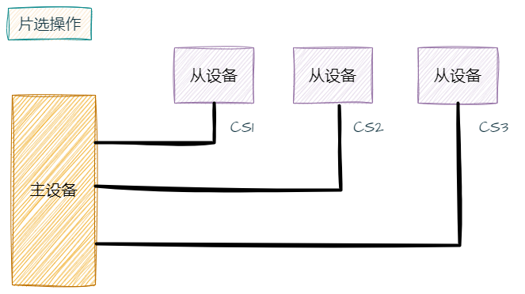</p><p data-lake-id="ua057c476" id="ua057c476"><span data-lake-id="ub9231794" id="ub9231794">这个主设备是可以和多个从设备进行通讯，但是，只能有一个从设备在线。控制从设备在线的方式是，主设备为每一个从设备准备一条片选线，谁如果在线，他的片选线就拉低，其他的拉高。</span></p><p data-lake-id="u25e7dea6" id="u25e7dea6"><span data-lake-id="ubf0eff4e" id="ubf0eff4e">​</span><br/></p><h3 data-lake-id="eh5J3" id="eh5J3"><span data-lake-id="uea0e571e" id="uea0e571e">通讯流程</span></h3><p data-lake-id="u54936eb5" id="u54936eb5">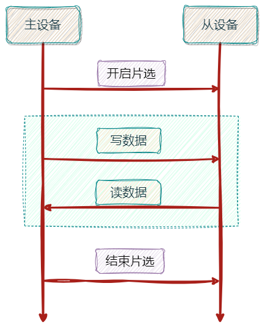</p><ul list="uc15fa511"><li data-lake-id="u8b691bab" fid="u6fbcc201" id="u8b691bab"><span data-lake-id="u92f31cf6" id="u92f31cf6">开启和结束片选，就是对CS片选线进行高低电平输出。</span></li><li data-lake-id="ube49b68e" fid="u6fbcc201" id="ube49b68e"><span data-lake-id="u1a6e1092" id="u1a6e1092">读写数据，在片选完成后，可以无限制的读和写。</span></li></ul><p data-lake-id="u94708874" id="u94708874"><span data-lake-id="ufd46fad2" id="ufd46fad2">​</span><br/></p><h3 data-lake-id="pAcpL" id="pAcpL"><span data-lake-id="u84518dc0" id="u84518dc0">通讯规则</span></h3><p data-lake-id="ube7fe258" id="ube7fe258">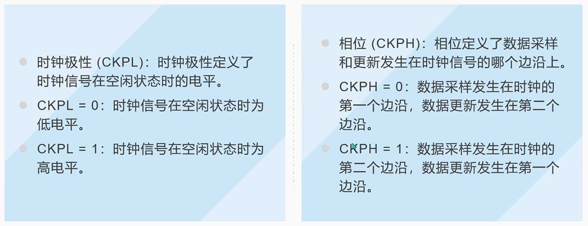</p><h4 data-lake-id="iieDN" id="iieDN"><span data-lake-id="u6c9e357f" id="u6c9e357f">时钟极性CPOL</span></h4><p data-lake-id="ud70fbcb2" id="ud70fbcb2"><span data-lake-id="u39ef0145" id="u39ef0145">CPOL（Clock Polarity）是SPI（Serial Peripheral Interface）通信协议的一个重要参数，它用于确定时钟信号（CLK）在空闲状态时的电平以及数据的改变和采样时机。</span></p><h5 data-lake-id="dyaiX" id="dyaiX"><span data-lake-id="udf7e3922" id="udf7e3922">CPOL = 0（时钟极性为0）</span></h5><p data-lake-id="ua9e4972e" id="ua9e4972e">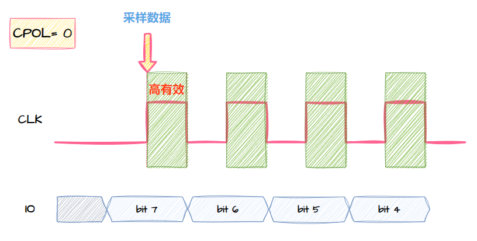</p><p data-lake-id="ucb0c599f" id="ucb0c599f"><span data-lake-id="u5bd62823" id="u5bd62823">在这种模式下，时钟信号在空闲状态时保持</span><strong><span data-lake-id="u7aad7eae" id="u7aad7eae">低电平</span></strong><span data-lake-id="u8ae50c8e" id="u8ae50c8e">（0）。激活状态时保持</span><strong><span data-lake-id="uf9b18b7d" id="uf9b18b7d">高电平</span></strong><span data-lake-id="ue9dc3416" id="ue9dc3416">（1）</span></p><p data-lake-id="u588a4cd2" id="u588a4cd2"><span data-lake-id="ua7abc1de" id="ua7abc1de">数据采样发生在CLK的</span><strong><span class="lake-fontsize-12" data-lake-id="u08f143ad" id="u08f143ad" style="color: #DF2A3F">上升沿</span></strong><span data-lake-id="ue00b0af5" id="ue00b0af5">。具体来说，当CLK从低电平（0）变为高电平（1）时，数据被采样。</span></p><p data-lake-id="u2c420c36" id="u2c420c36"><span data-lake-id="u3d574b36" id="u3d574b36">​</span><br/></p><h5 data-lake-id="Y3UiM" id="Y3UiM"><span data-lake-id="u26137a6e" id="u26137a6e">CPOL = 1（时钟极性为1）</span></h5><p data-lake-id="u286c4fbf" id="u286c4fbf">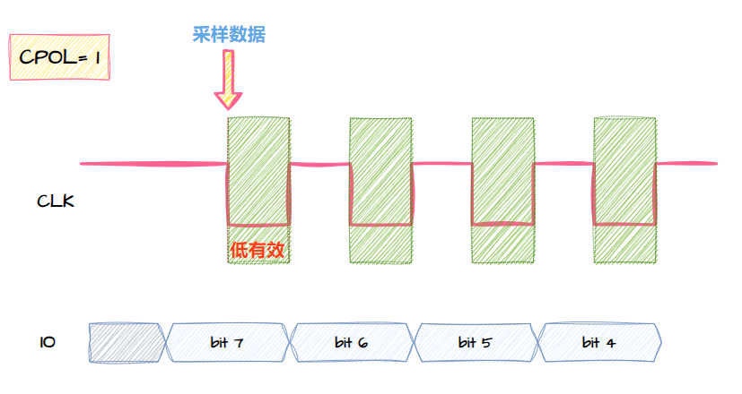</p><p data-lake-id="u66e72507" id="u66e72507"><span data-lake-id="u4ded7292" id="u4ded7292">在这种模式下，时钟信号在空闲状态时保持</span><strong><span data-lake-id="u91f4728b" id="u91f4728b">高电平</span></strong><span data-lake-id="uf5cd0628" id="uf5cd0628">（1）。激活状态时保持</span><strong><span data-lake-id="udb65eab7" id="udb65eab7">低电平</span></strong><span data-lake-id="u8de7f81b" id="u8de7f81b">（0）</span></p><p data-lake-id="u13766260" id="u13766260"><span data-lake-id="u1b853e6b" id="u1b853e6b">数据采样发生在SCLK的</span><strong><span class="lake-fontsize-12" data-lake-id="uf06eacbd" id="uf06eacbd" style="color: #DF2A3F">下降沿</span></strong><span data-lake-id="u57cd6e29" id="u57cd6e29">。具体来说，当SCLK从高电平（1）变为低电平（0）时，数据被采样。</span></p><p data-lake-id="u3cce8aa8" id="u3cce8aa8"><span data-lake-id="u4b551485" id="u4b551485">​</span><br/></p><h4 data-lake-id="EfFy0" id="EfFy0"><span data-lake-id="uf83ef63b" id="uf83ef63b">时钟相位CPHA</span></h4><p data-lake-id="uf428a526" id="uf428a526"><span data-lake-id="u9e760b40" id="u9e760b40">CPHA（Clock Phase）是SPI（Serial Peripheral Interface）通信协议的另一个关键参数，它用于确定数据何时传输和采样相对于时钟信号（SCLK）的相位。CPHA有两种可能的取值：0和1。</span></p><h5 data-lake-id="OSVkK" id="OSVkK"><span data-lake-id="u2837c94b" id="u2837c94b">CPHA = 0（时钟相位为0）</span></h5><p data-lake-id="u003bb09a" id="u003bb09a">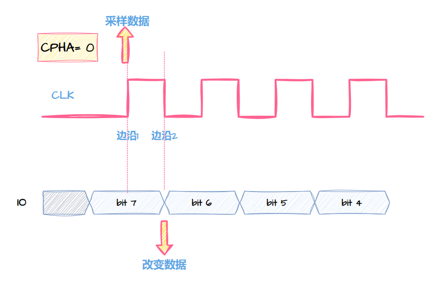</p><p data-lake-id="u75befcf1" id="u75befcf1"><span data-lake-id="u156601ff" id="u156601ff">在这种模式下，在时钟信号</span><strong><span data-lake-id="u0b95f564" id="u0b95f564">第一个边沿</span></strong><strong><span data-lake-id="u5190c33c" id="u5190c33c" style="color: #DF2A3F">采样</span></strong><strong><span data-lake-id="ued62dab9" id="ued62dab9">数据</span></strong><span data-lake-id="u4965b7bd" id="u4965b7bd">，在</span><strong><span data-lake-id="ue14bbe02" id="ue14bbe02">第二个边沿</span></strong><strong><u><span data-lake-id="u9608ea76" id="u9608ea76">改变</span></u></strong><strong><span data-lake-id="u147343d9" id="u147343d9">数据</span></strong><span data-lake-id="u991e7166" id="u991e7166">（上升沿或下降沿取决于CPOL）</span></p><p data-lake-id="ub0af6207" id="ub0af6207"><br/></p><h5 data-lake-id="YXqyw" id="YXqyw"><span data-lake-id="u2469f7c3" id="u2469f7c3">CPHA = 1（时钟相位为1）</span></h5><p data-lake-id="u8461031a" id="u8461031a">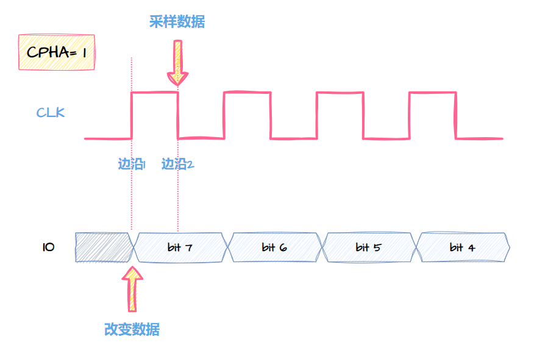</p><p data-lake-id="u13d9a609" id="u13d9a609"><span data-lake-id="ubf534537" id="ubf534537">在这种模式下，在时钟信号</span><strong><span data-lake-id="ub38fddbc" id="ub38fddbc">第一个边沿</span></strong><strong><u><span data-lake-id="uec597b4d" id="uec597b4d">改变</span></u></strong><strong><span data-lake-id="ue73e7f50" id="ue73e7f50">数据</span></strong><span data-lake-id="ufcbafd1b" id="ufcbafd1b">，在</span><strong><span data-lake-id="u17c5d062" id="u17c5d062">第二个边沿</span></strong><strong><span data-lake-id="ud1ca2ab5" id="ud1ca2ab5" style="color: #DF2A3F">采样</span></strong><strong><span data-lake-id="u4e881fc4" id="u4e881fc4">数据</span></strong></p><p data-lake-id="uf21eee88" id="uf21eee88"><span data-lake-id="u65e3f67e" id="u65e3f67e">​</span><br/></p><blockquote class="lake-alert lake-alert-warning" data-lake-id="u48303809" id="u48303809"><p data-lake-id="u9e706476" id="u9e706476"><strong><span data-lake-id="ub31b487f" id="ub31b487f">这里只数第几个边沿，到底是上升沿或下降沿？要取决于CPOL ！</span></strong></p></blockquote><p data-lake-id="uce7b2b04" id="uce7b2b04"><br/></p><h3 data-lake-id="RLPlq" id="RLPlq"><span data-lake-id="u8fc22f4e" id="u8fc22f4e">传输与采样模式</span></h3><p data-lake-id="u884acfe9" id="u884acfe9"><span data-lake-id="ub23e9e92" id="ub23e9e92">由时钟极性和相位两两搭配，可以组成4种模式，主要表达的是何时进行传输，何时进行采样。</span></p><h4 data-lake-id="Ieha1" id="Ieha1"><span data-lake-id="u652234eb" id="u652234eb">SPI模式0（CPOL = 0, CPHA = 0）</span></h4><ul list="ueb26ae0e"><li data-lake-id="u68e75acc" fid="u4475163d" id="u68e75acc"><span data-lake-id="u3c6a09ff" id="u3c6a09ff">SCLK在空闲状态为低电平。</span></li><li data-lake-id="ubd5e6bf1" fid="u4475163d" id="ubd5e6bf1"><span data-lake-id="u3034a24c" id="u3034a24c">数据在SCLK的上升沿改变（传输），在下降沿采样。</span></li></ul><p data-lake-id="ub592ef06" id="ub592ef06"><span data-lake-id="u0c2181c9" id="u0c2181c9">这是最常见的SPI模式，通常用于许多SPI设备。</span></p><p data-lake-id="u5d488fe1" id="u5d488fe1"><span data-lake-id="u5ee3a121" id="u5ee3a121">​</span><br/></p><p data-lake-id="u7aeb138a" id="u7aeb138a">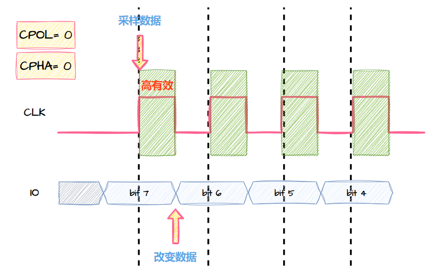</p><hr/><p data-lake-id="u706a3e28" id="u706a3e28"><br/></p><h4 data-lake-id="VY7AE" id="VY7AE"><span data-lake-id="u6ceb95e0" id="u6ceb95e0">SPI模式1（CPOL = 0, CPHA = 1）</span></h4><ul list="u4710e72d"><li data-lake-id="u016ebecf" fid="u84366193" id="u016ebecf"><span data-lake-id="u22d92558" id="u22d92558">SCLK在空闲状态为低电平。</span></li><li data-lake-id="ufc228755" fid="u84366193" id="ufc228755"><span data-lake-id="u1cfd2074" id="u1cfd2074">数据在SCLK的下降沿改变（传输），在上升沿采样。</span></li></ul><p data-lake-id="u53d32885" id="u53d32885">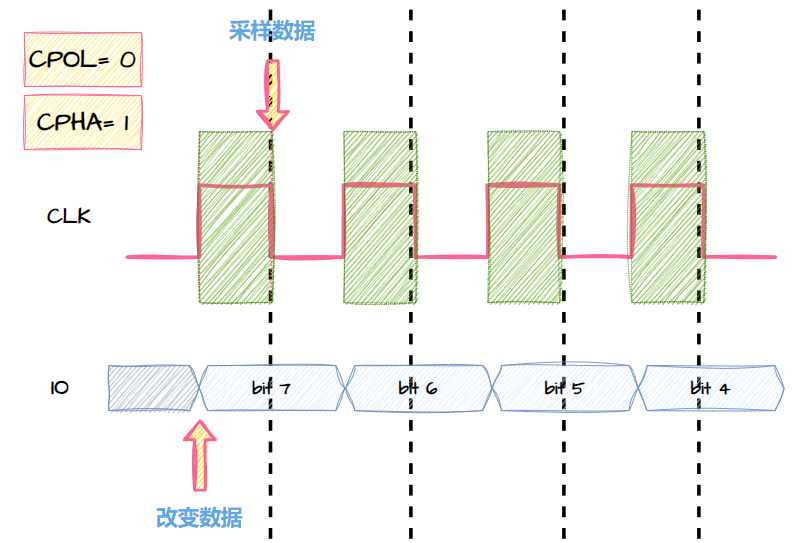</p><hr/><p data-lake-id="u30eb88d6" id="u30eb88d6"><br/></p><h4 data-lake-id="O7Ds7" id="O7Ds7"><span data-lake-id="ubab82e0e" id="ubab82e0e">SPI模式2（CPOL = 1, CPHA = 0）</span></h4><ul list="u5ee11125"><li data-lake-id="ub9e6ddb3" fid="u963ea4f0" id="ub9e6ddb3"><span data-lake-id="u98657f73" id="u98657f73">SCLK在空闲状态为高电平。</span></li><li data-lake-id="ue6f6e64c" fid="u963ea4f0" id="ue6f6e64c"><span data-lake-id="u42e20eeb" id="u42e20eeb">数据在SCLK的上升沿改变（传输），在下降沿采样。</span></li></ul><p data-lake-id="uc94fedb5" id="uc94fedb5">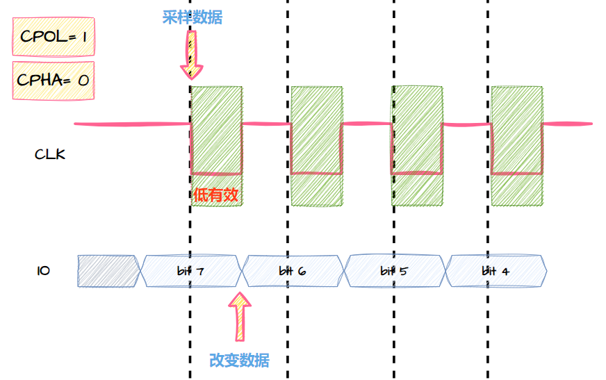</p><hr/><p data-lake-id="u317568a6" id="u317568a6"><br/></p><h4 data-lake-id="S4FSP" id="S4FSP"><span data-lake-id="u82f4a2fd" id="u82f4a2fd">SPI模式3（CPOL = 1, CPHA = 1）</span></h4><ul list="u9f035bfa"><li data-lake-id="u4d396e54" fid="u3aa730cb" id="u4d396e54"><span data-lake-id="u96c372d2" id="u96c372d2">SCLK在空闲状态为高电平。</span></li><li data-lake-id="u6b4e161e" fid="u3aa730cb" id="u6b4e161e"><span data-lake-id="uc87eb223" id="uc87eb223">数据在SCLK的下降沿改变（传输），在上升沿采样。</span></li></ul><p data-lake-id="u4e524f73" id="u4e524f73">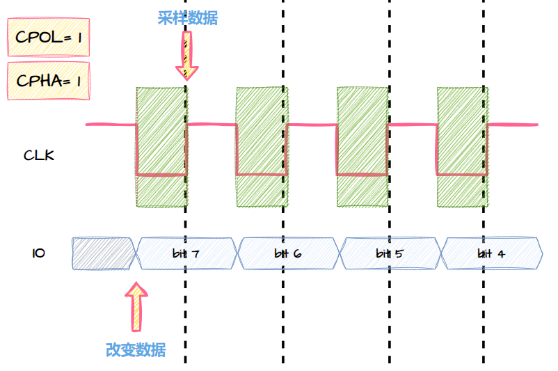</p><p data-lake-id="u26586fe7" id="u26586fe7"><br/></p><h3 data-lake-id="ngK1B" id="ngK1B"><span data-lake-id="u2e85ff22" id="u2e85ff22">总结图</span></h3><p data-lake-id="ue07cae4a" id="ue07cae4a">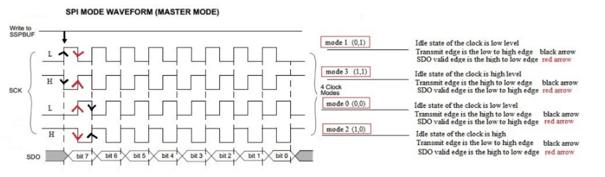</p><p data-lake-id="ude71febc" id="ude71febc">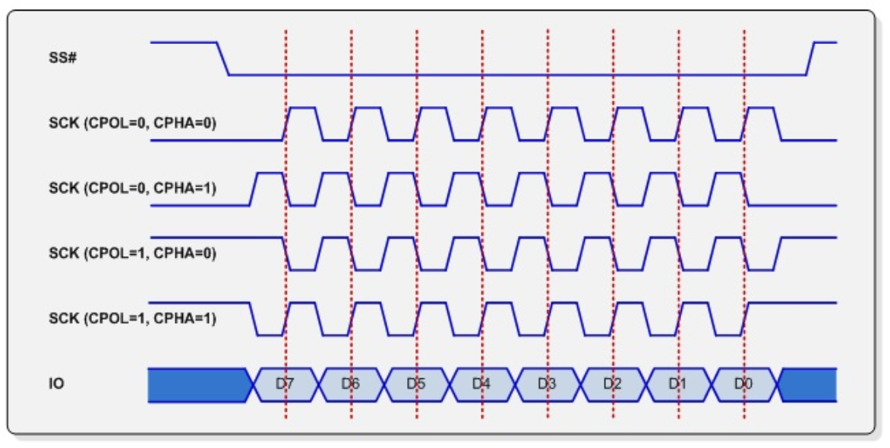</p><h3 data-lake-id="AEeoR" id="AEeoR"><span data-lake-id="u1e053325" id="u1e053325">模式总结</span></h3><p data-lake-id="ue1f97f90" id="ue1f97f90">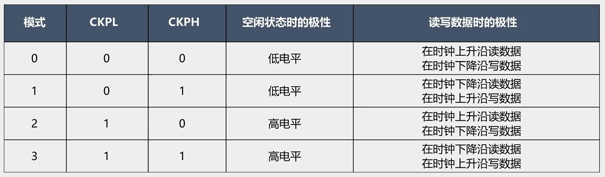</p><p data-lake-id="u3d86cbc9" id="u3d86cbc9"><br/></p><h3 data-lake-id="Mcvln" id="Mcvln"><span data-lake-id="u89b0acbe" id="u89b0acbe">大小端</span></h3><p data-lake-id="u7eafe57e" id="u7eafe57e"><span data-lake-id="u6143ad01" id="u6143ad01">在SPI（Serial Peripheral Interface）通信中，MSB（Most Significant Bit）和LSB（Least Significant Bit）是指数据字节的高位（最高有效位）和低位（最低有效位）。它们用于描述数据位的传输顺序，即哪个数据位首先被发送或接收。</span></p><ul list="u8707e125"><li data-lake-id="u88b88cdf" fid="ue81bcc45" id="u88b88cdf"><span data-lake-id="ud9de5560" id="ud9de5560">MSB First: 在这种模式下，SPI通信从数据字节的最高有效位（MSB）开始传输，依次传输到最低有效位（LSB）。这是SPI通信的默认模式，也是最常见的模式。大多数SPI设备都使用此模式。</span></li><li data-lake-id="uee331b3a" fid="ue81bcc45" id="uee331b3a"><span data-lake-id="u7a541a38" id="u7a541a38">LSB First: 在这种模式下，SPI通信从数据字节的最低有效位（LSB）开始传输，依次传输到最高有效位（MSB）。这种模式较少见，通常在特定应用或特定SPI设备中使用。</span></li></ul><p data-lake-id="uadda224b" id="uadda224b"><span data-lake-id="ub00ea9af" id="ub00ea9af">通常，SPI设备的数据手册或规格书会明确指定它们使用的位传输顺序，以便正确配置主设备（通常是微控制器或微处理器）的SPI控制器。确保主设备的位传输顺序与所连接的SPI设备的要求相匹配非常重要，否则通信可能会导致错误或数据丢失。大多数SPI控制器都允许配置MSB或LSB传输顺序以适应不同的设备需求。</span></p><p data-lake-id="ufaf316c2" id="ufaf316c2">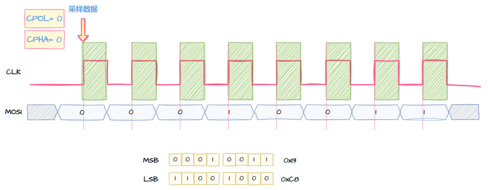</p>